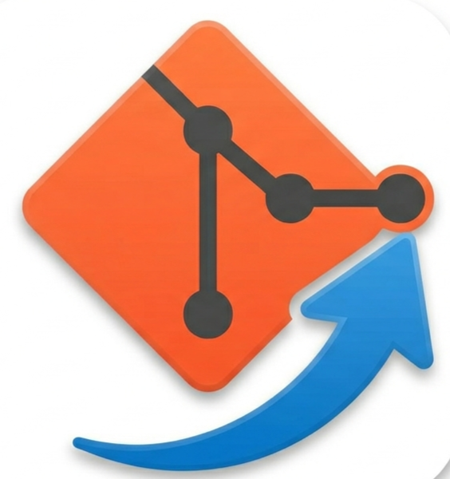

Choose a folder
Start managing any local project folder with a .simplegit history stored inside it.

SimpleGitA small desktop app for project snapshots
Save versions of a folder, browse your timeline, and switch back to earlier work without learning command-line Git.
Project
Start managing any local project folder with a .simplegit history stored inside it.
Create named snapshots whenever a project reaches a useful state.
Move back and forward through saved states while ignored folders stay protected.
Windows download
The build script places the latest executable here so the website download button always points to the current release.